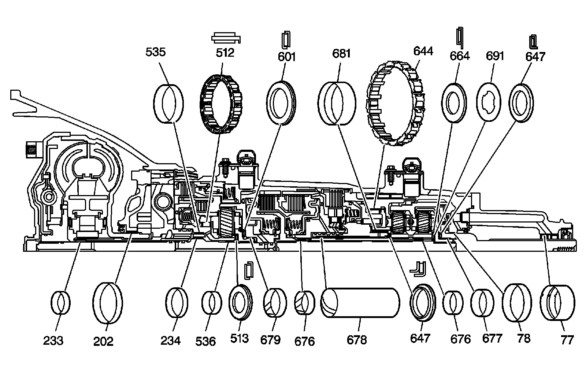
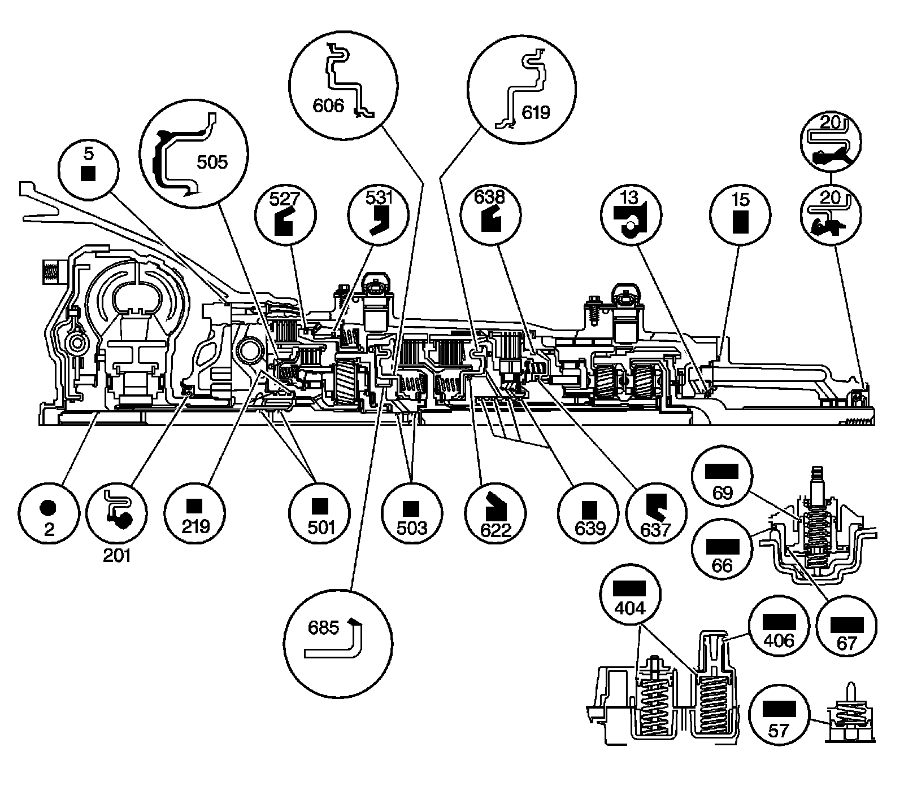
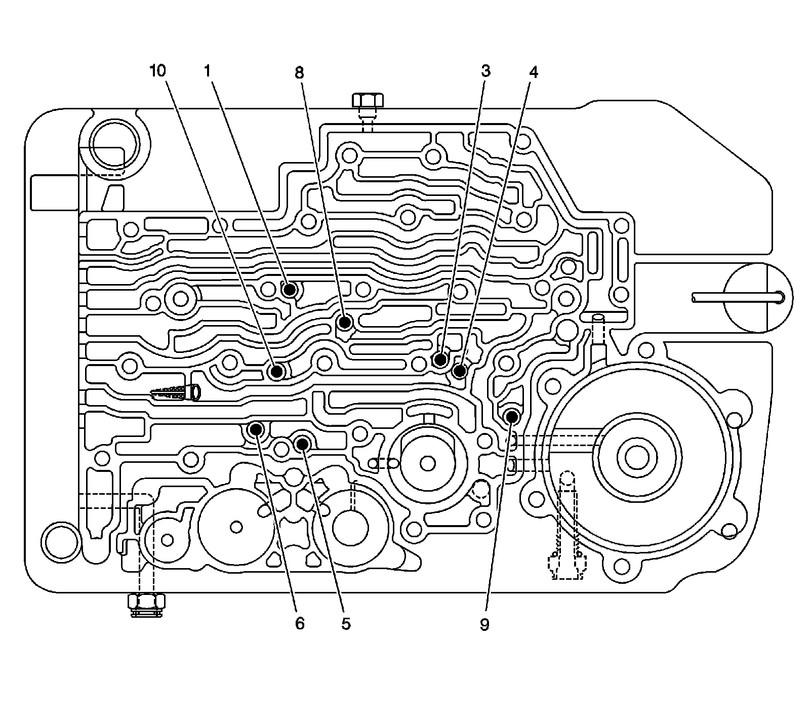
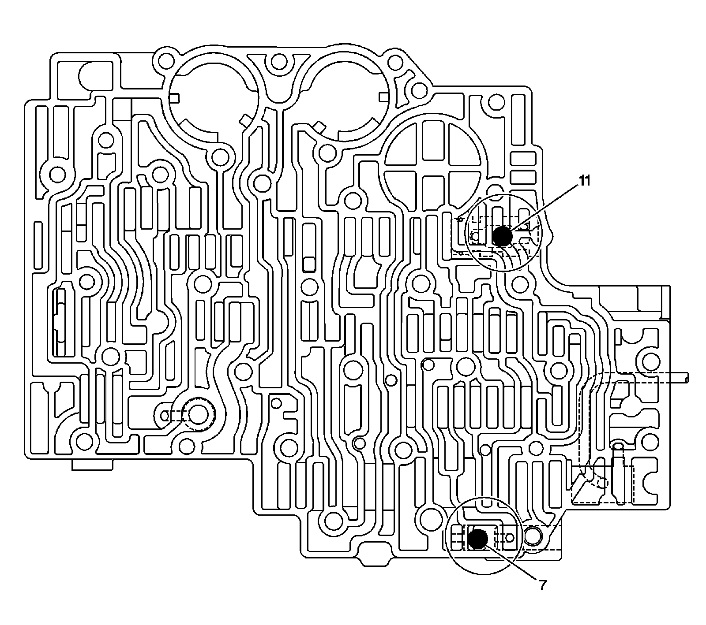

Component Location
Component Location
Bushing and Bearing Locations:

77 - Prop Shaft Front Slip Yoke Bushing
78 - Output Shaft Bushing
202 - Torque Converter Bushing
233 - Turbine Shaft Front Bushing
234 - Turbine Shaft Rear Bushing
512 - Overdrive Clutch Roller Assembly
513 - Overrun Clutch Housing Thrust Bearing Assembly
535 - Overrun Clutch Housing Bushing
536 - Bushing, 1.12 in. Outside Diameter x 0.50 in.
601 - Thrust Carrier/Forward Clutch Bearing Assembly
644 - Low Clutch Roller Assembly
647 - Sun Gear Front/Rear Internal Gear Thrust Bearing Assembly
647 - Sun Gear Front/Rear Internal Gear Thrust Bearing Assembly
664 - Sun Gear Rear Thrust Bearing Assembly
676 - Main Shaft Bushing
676 - Main Shaft Bushing
677 - Rear Internal Gear Bushing
678 - Center Support Oil Passage Sleeve
679 - Bushing, 1.536 in. Diameter x 3.52 in.
681 - Reaction Carrier Bushing
691 - Rear Internal Gear Thrust Washer
Seals:

2 - Turbine Shaft Front Oil Seal Ring
5 - Oil Pump Seal
13 - Output Shaft Seal
15 - Case Extension Seal
20 - Prop Shaft Front Slip Yoke Oil Seal Assembly
20 - Prop Shaft Front Slip Yoke Oil Seal Assembly
57 - Manual 2-1 Band Servo Piston Seal
66 - Low and Reverse Band Servo Piston Seal
67 - Low and Reverse Accumulator Piston Outer Oil Seal Ring
69 - Low and Reverse Accumulator Piston Inner Oil Seal Ring
201 - Torque Converter Oil Seal Assembly
219 - Overrun Clutch Housing Oil Seal Ring
404 - 3rd Clutch Accumulator Piston Outer Seal
406 - 3rd Clutch Accumulator Piston Inner Seal
501 - Turbine Shaft Intermediate Oil Seal Ring
503 - Turbine Shaft Rear Oil Seal Ring
505 - Overrun Clutch Piston Assembly
527 - Fourth Clutch Piston Inner Seal
531 - Fourth Clutch Piston Outer Seal
606 - Forward Clutch Piston Assembly
619 - Direct Clutch Piston Assembly
622 - Direct Clutch Piston Intermediate Seal
637 - Intermediate Clutch Piston Inner Seal
638 - Intermediate Clutch Piston Outer Seal
639 - Direct Clutch Housing Oil Seal Ring
685 - Forward Clutch Piston Intermediate Seal Assembly
Ball Check Valve Locations (Case, Control Valve Body Side):

1 - Overrun Clutch
3 - Front Band Apply
4 - 2nd Clutch
5 - 3rd Accumulator
6 - 4th Accumulator
8 - 3rd Clutch
9 - Reverse
10 - 4th Clutch
Ball Check Valve Locations (Control Valve Body, Case Side):

7 - Lo/Reverse
11 - 3rd Clutch/Reverse